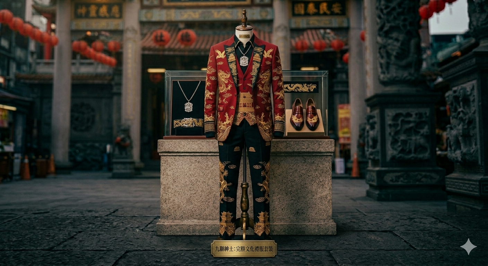
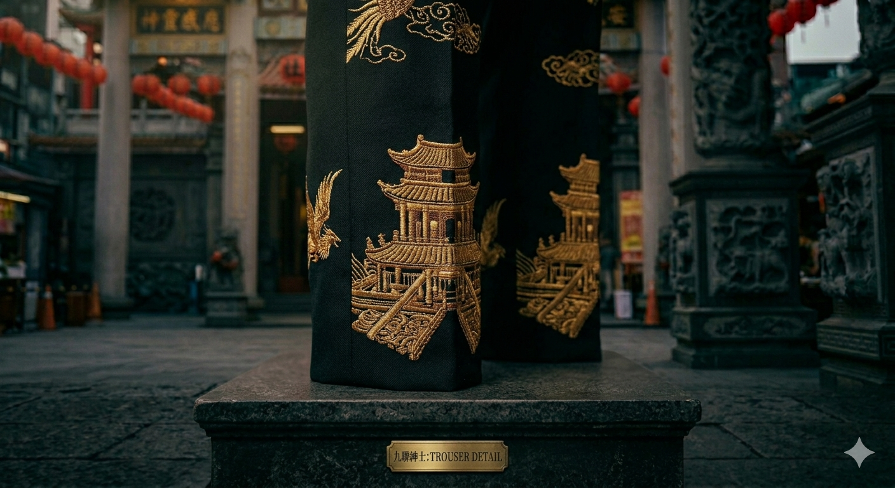
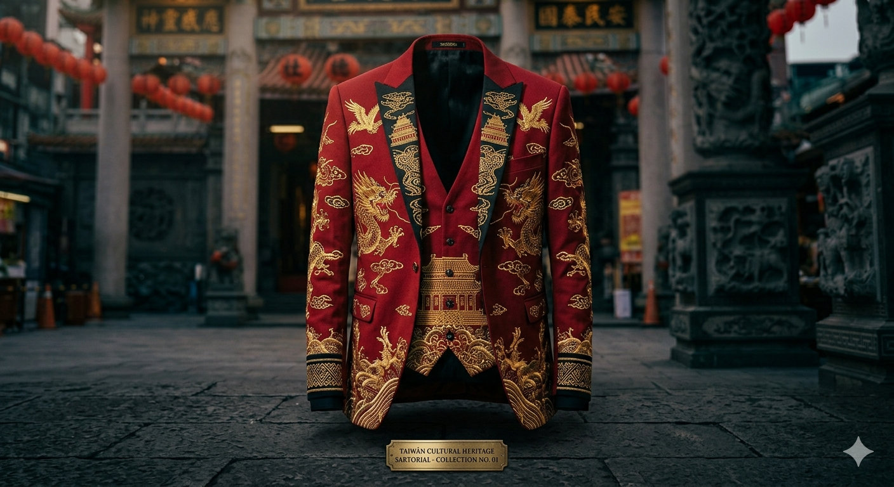
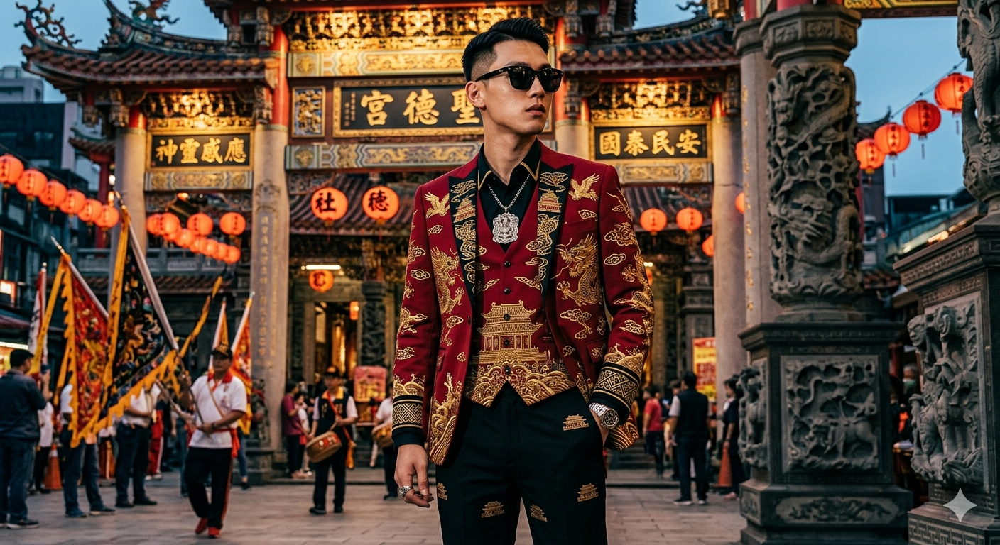

「九聯紳士 (BA-GAA-NINE)」是一場大膽的台式街頭正裝文化實驗。我們旨在解構大眾對台灣在地「8+9」族群的刻板印象，提煉其獨特的街頭符號與兄弟情義，並將其與深厚的宮廟裝飾美學、現代高階男裝裁剪進行深度融合。
傳統的「8+9西裝」是台灣街頭最具有野性與陣仗感的視覺服飾。我們保留了其靈魂中的「極致修身、不服輸的草根韌性」，並將實體宮廟建築中的飛簷、織錦、祥雲與神獸圖騰，直接作為高級面料的經緯編織。讓台灣民間信仰工藝與當代街頭潮流並肩，登陸現代都市。
台灣的廟宇不僅是信仰中心，更是民間工藝的寶庫。飛簷的弧度、金線的密度、祥雲的紋理——每一個細節都承載著世代相傳的美學語言。我們將這份美學從廟堂中解放，融入當代服飾。
街頭的「8+9」文化並非簡單的叛逆符號。在激窄修身、金鍊閃耀的背後，是對自我尊嚴的執著、是群體忠誠的體現。九聯紳士承認這份精神，將其重新詮釋為高級感與自信。
當龍鳳呈祥的金線出現在肩線，當祥雲紋理跳動在褲線，我們不是在消費文化，而是在宣言——台灣的民間美學，值得登上世界舞台。
採用「宮廟盛典紅」高級提花織錦面料。以高密度金線和絲線交織，重現廟宇壁畫與神明神衣上的龍鳳呈祥、翻江疊浪、祥雲飛簷等刺繡細節。激窄修身版型強調肩線硬挺與腰身俐落。解開單鈕扣時可隱約露出台式虎爺圖騰襯衫，形成「龍鳳與伏虎」的文化對話。
以「深邃黑」高階正裝面料作為基底，收斂整體視覺平衡。精準的窄版九分裁剪完美還原台式街頭行走時的俐落狠勁與自信步伐。雙側褲管外縫線與褲口袋邊緣皆手工刺繡精細的廟宇流線金色龍鱗紋與翻騰祥雲。服飾在動態行走時，隨著光影折射散發出內斂卻極具威嚴的金屬光澤。
這不是簡單的美學疊加，而是精神的共鳴。街頭的「極致修身、不服輸的草根韌性」與廟宇的「端莊、威嚴、神聖」在每一根金線中交融。每穿一次，都是在宣告自我、傳遞尊嚴。



參加重要聚會、商務活動時，當所有人都穿著單調正裝，九聯紳士讓你在莊重中展現個性。你不需要妥協自我去符合規範，而是用台灣文化的力量重新定義什麼叫「正式」。
對台灣街頭文化深有認同的人。九聯紳士不是批評，而是尊重——承認那份精神的真實存在，並將其提升到高級時尚領域。穿上它，就是說：我為自己的根源感到驕傲。
在全球化時代，仍堅持台灣身份認同的人。透過每一件衣服，你都在說：我不是在模仿西方，我在展現自己的文化語言。廟宇的美學不輸任何奢侈品。
每件九聯紳士套裝均採用傳統裁縫與現代設計相結合的工藝。高級提花面料與精密的手工刺繡確保每件產品都是獨特的藝術作品。材料來自國際頂級供應商，製作過程在台灣進行，確保品質與文化完整性。
對九聯紳士感興趣嗎？我們欢迎所有關於合作、訂購或諮詢的詢問。